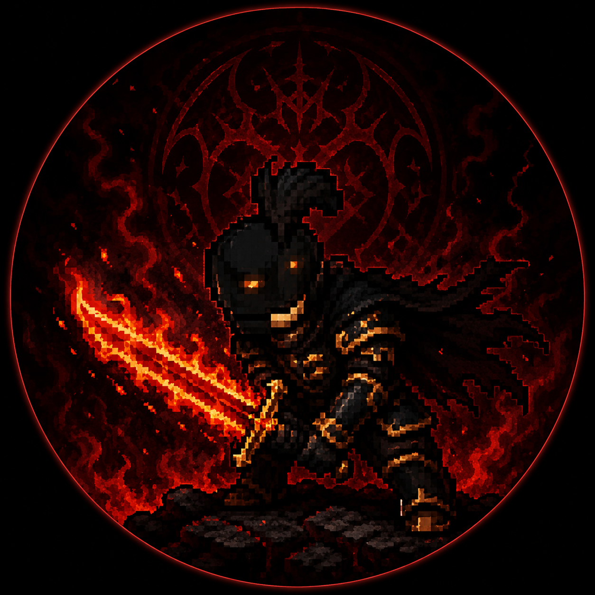

Valarya is a human knight of the Argent Gryphon bearing the rank of Oathsworn, though whispers place his name among the remnants of the ancient Order of the Black Knights — an order long buried beneath myth, denial, and deliberate forgetting.
He is not a man who appears cruel at first meeting. Valarya carries himself with restraint uncommon among knights. He speaks little unless spoken to directly, listens with unsettling attentiveness, and rarely wastes emotion on displays of anger, pride, or zeal. Most remember him first as calm. Reasonable. Measured. The sort of man capable of standing unmoved while others lose themselves to fear or outrage.
That stillness is what draws people toward him. He possesses a talent for understanding what others need to hear, particularly in moments of uncertainty. To the doubtful, he offers certainty. To the ashamed, absolution. To the ambitious, purpose. He does not manipulate through charm so much as through permission — an ability to make people feel their worst instincts are not weaknesses, but necessary truths they were too frightened to admit aloud.
He believes deeply that every institution eventually rots beneath the weight of its own ideals. Honour becomes vanity. Faith becomes control. Mercy becomes weakness exploited by the merciless. Where others react to this decay with outrage or despair, Valarya accepts it with near religious calm. In his view, corruption is not a failure of mankind, but its most honest state.
Despite this, he is neither reckless nor openly sadistic. Violence is a tool he employs without hesitation, but rarely without purpose. He dislikes spectacle, distrusts fanaticism, and views emotional cruelty as wasteful indulgence. What unsettles others most is not brutality, but the absence of visible hatred behind it. Valarya can condemn a man with the same composure another knight might use to discuss the weather.
Among the Argent Gryphon, his influence is difficult to measure because it rarely appears forceful. Decisions made around him simply tend to drift toward harsher conclusions. Compromises become ultimatums. Necessary evils become accepted practice. Over time, men who once considered themselves virtuous find themselves defending acts they would previously have condemned, often without remembering precisely when their thinking changed.
Whether this is deliberate manipulation or merely the consequence of Valarya's presence is unclear. Even his loyalties remain uncertain. Some believe the vows he carries as Oathsworn bind him utterly to the Argent Gryphon. Others suspect those oaths conceal an older allegiance to the forgotten doctrines of the Black Knights. Valarya himself has never clarified the matter, and those few who pressed him on it rarely found the answers comforting.
He has the unnerving habit of speaking about ruin the same way other men speak about winter — not with excitement, nor fear, but with quiet acceptance of something inevitable.